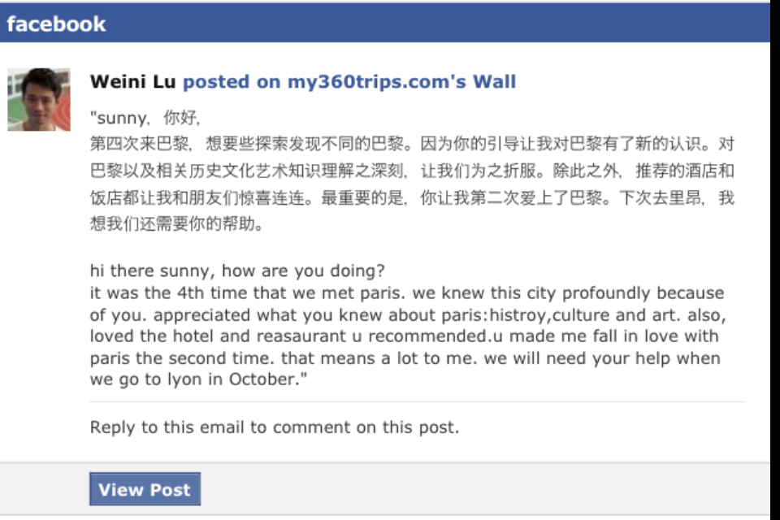

好評論~ Feedbacks
客戶的好評論 :
您可以留言你的好评论在我們的Facebook網站或寫電子郵件給我們 contact@my360trips.com :



 出发前做行程的时候，恰好在看“唐顿庄园”，看落日余晖下的古堡，看清晨露珠里的草地，所以，当卢瓦河城堡游跃入我的眼帘，没有丝毫的犹豫，就是它了！ ！
出发前做行程的时候，恰好在看“唐顿庄园”，看落日余晖下的古堡，看清晨露珠里的草地，所以，当卢瓦河城堡游跃入我的眼帘，没有丝毫的犹豫，就是它了！ ！
“香波荷"、"雪侬墅",光名字就很赞，我觉得一点也不逊于“枫丹白露”。加上安布瓦斯，是因为那里是达芬奇最后的庄园。
蝎子帮我联系了sunlay，一个华裔的法国人，吃货加小文艺，很对我们的路，于是导游和司机搞定了。
tips1 去巴黎，打算去有游城堡的朋友，注意哦，如果，你也想在1天内游览3个堡，那一定要自驾或租车。因为去任何一个堡都要坐火车，而一旦错过了班次，可能就会等好久，扫兴哦。如果，你时间比较宽裕，那火车也不错，还可以在安布瓦斯住上一个晚上。
tips2 城堡游，网上也有许多当地的旅行团，但都不太靠谱。我曾订了”途风“，后来又通知我人太少不能成行，而且盆友说那是大巴，时间又控制得很紧，超没意思，所以啊，还是自己自由哦。
因为要去3个堡，早晨7点半在巴黎人还在睡觉的时候，我们就出发了。和sunlay是第一次见面，一路上聊了很久，时间过得飞快，很快到了第一站，最近的”香波荷“。
香波荷，占地面积很大，相当于巴黎市区的面积，从外围开车进去要挺长一段路，是佛朗索瓦一世时代的狩猎场，据说那里还有野猪和鹿群，不过我们没有看到，也许它们还在睡觉？
整个古堡建筑由四座塔楼相连，四四方方，而内景却别有洞天。